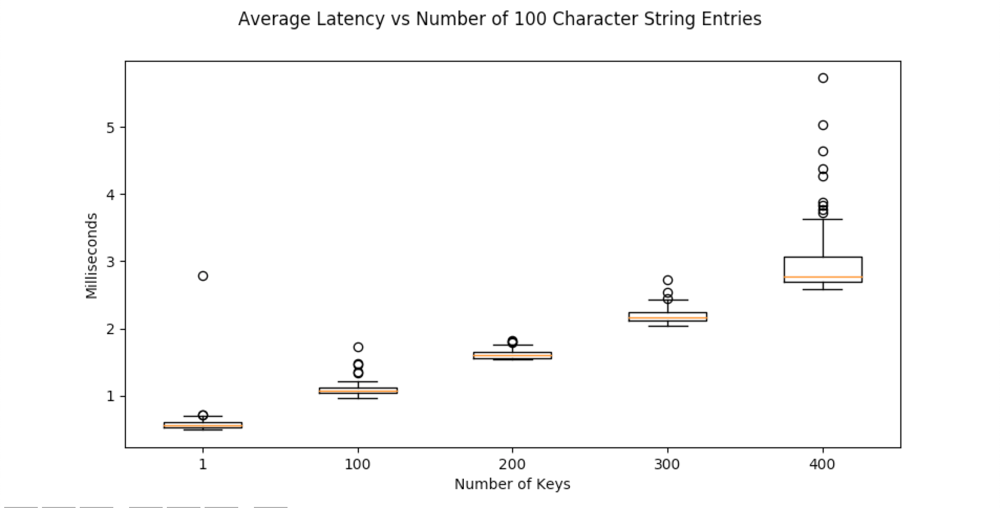
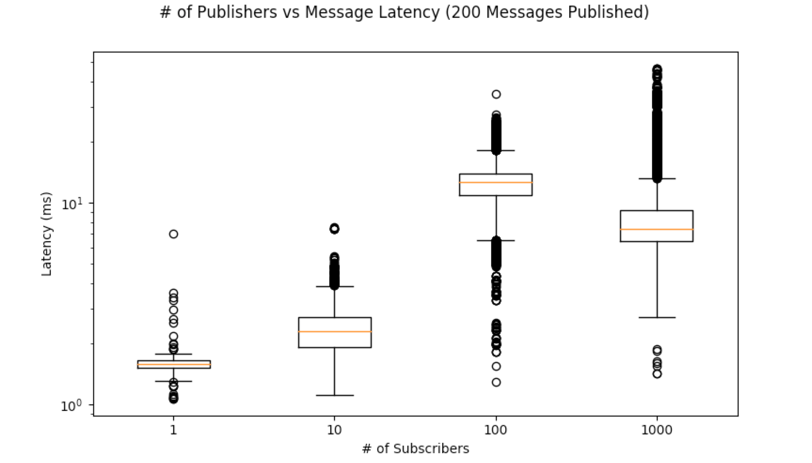

Performance¶
The below documents REEM Performance. See the repository for the full source code and more information.
Data Transfer Rates¶
Both the database and pubsub paradigms use the same methods for data transfer. The below tests apply to both even though it was conducted in the database paradigm.
Number of Entries vs Latency¶
String Data¶
In the below test, a dictionary with X string entries was written to Redis. One hundred trials were conducted. The box-plots of their latency is below. Latency grows linearly with the amount of data sent. The source code to generate this plot is below.
def key_growth_strings():
info = {"title": "Average Latency vs Number of 100 Character String Entries", "plots": [], "x_label": "Number of Keys"}
for copies in [max(1, 100 * i) for i in range(5)]:
data = single_level_dictionary(copies=copies, data={"single_key": "".join(["A" for i in range(10**2)])})
p = {
"ticker_label": copies,
"times": multitrial_time_test(set, {"keys": ["key_growth"], "value": data}, iterations=100)
}
info["plots"].append(p)
print("Completed: {}".format(copies))
plot_performance(info)
Numpy Data¶
In the below test, a dictionary with X numpy array entries was written to Redis. One hundred trials were conducted. The box-plots of their latency is below. Latency grows linearly with the amount of data sent. The source code to generate this plot is below.

def key_growth_numpy():
info = {"title": "Average Latency vs Number of Numpy Entries", "plots": [], "x_label": "Number of Keys"}
for copies in [max(1, 10 * i) for i in range(5)]:
data = single_level_dictionary(copies=copies, data={"single_key": np.random.rand(3, 4)})
p = {
"ticker_label": copies,
"times": multitrial_time_test(set, {"keys": ["key_growth_numpy"], "value": data}, iterations=100)
}
info["plots"].append(p)
print("Completed: {}".format(copies))
plot_performance(info)
Numpy Array Size Throughput¶
Set¶
A numpy array of size (N x N) was uploaded to the server as fast as possible. Frame rates are shown below

def numpy_set_frame_rates():
info = {"title": "Numpy Array Set Frame Rates", "plots": [], "x_label": "Image Shape", "y_label": "Frames/Second", "y_scale":'log'}
# sets = [np.random.rand(640, 480, 3), np.random.rand(720, 480, 3), np.random.rand(1080, 720, 3)]
sets = [np.random.rand(max(10, 200 * i), max(10, 200 * i)) for i in range(6)]
for arr in sets:
trials = multitrial_time_test(set, {"keys": ["np_frame_rate_test", "key"], "value": arr}, iterations=50)
trials = [1000.0/t for t in trials]
p = {
"ticker_label": arr.shape,
"times": trials
}
info["plots"].append(p)
plot_performance(info)
Get¶
A numpy array of size (N x N) was downloaded from the server as fast as possible. Frame rates are shown below

def numpy_get_frame_rates():
info = {"title": "Numpy Array Get Frame Rates", "plots": [], "x_label": "Image Shape", "y_label": "Frames/Second", "y_scale":'log'}
# sets = [np.random.rand(640, 480, 3), np.random.rand(720, 480, 3), np.random.rand(1080, 720, 3)]
sets = [np.random.rand(max(10, 200 * i), max(10, 200 * i)) for i in range(6)]
for arr in sets:
kvs["read_frame_rate_test"]["subkey"] = arr
trials = multitrial_time_test(get, {"keys": ["read_frame_rate_test", "subkey"]}, iterations=50)
trials = [1000.0 / t for t in trials]
p = {
"ticker_label": arr.shape,
"times": trials
}
Subscriber Overhead¶
The below code tested what the overhead was with having multiple subscribers to a given channel. The publisher and each subscriber was run in it’s own process on the same machine. A publisher uploaded a timestamp and subscribers calculated the difference between the timestamp and the time they read the image.
# --------------------------- Subscriber Overhead Testing ---------------------------
PULSE_GAP = 0.02
TRIALS = 200
def append_time_to_list(data, updated_path, times):
times.append(time.time() - data["timestamp"])
def overhead_testing_subscriber(test_name, timeout=10):
times = []
interface = RedisInterface()
subscriber = CallbackSubscriber("overhead_test", interface, append_time_to_list, {"times": times})
subscriber.listen()
time.sleep(timeout)
base = os.path.dirname(os.path.abspath(__file__))
save_dir = os.path.join(base, "logs", "overhead_test", test_name)
save_path = os.path.join(save_dir, "subscriber_{}.txt".format(os.getpid()))
if not os.path.exists(save_dir):
os.makedirs(save_dir)
with open(save_path, "w") as f:
for t in times:
f.write("{}\n".format(t))
def overhead_testing_publisher():
interface = RedisInterface()
publisher = PublishSpace(interface)
for i in range(TRIALS):
publisher["overhead_test"] = {"timestamp": time.time()}
time.sleep(PULSE_GAP)
def generate_subscriber_overhead_data(num_subscriber_list):
base = os.path.join(os.path.dirname(os.path.abspath(__file__)), "logs", "overhead_test")
shutil.rmtree(base)
for num_subscribers in num_subscriber_list:
processes = [(overhead_testing_publisher, (), {})]
test_name = "subs={}".format(num_subscribers)
save_dir = os.path.join(base, test_name)
if not os.path.exists(save_dir):
os.makedirs(save_dir)
for i in range(num_subscribers):
processes.append((overhead_testing_subscriber, (test_name, PULSE_GAP * TRIALS), {}))
run_as_processes(processes)
print("Completed test with {} subscribers".format(num_subscribers))
def plot_overhead_data():
time_data = {}
base = os.path.dirname(os.path.abspath(__file__))
save_dir = os.path.join(base, "logs", "overhead_test")
for dirpath, dirs, files in os.walk(save_dir):
if "subs" not in dirpath:
continue
num_subscribers = int(dirpath.split("subs=")[1])
time_data[num_subscribers] = []
for fpath in files:
with open(os.path.join(dirpath, fpath), 'r') as file:
for line in file:
time_data[num_subscribers].append(float(line) * 1000) # Seconds to milliseconds conversion
plot_info = {
"title": "# of Publishers vs Message Latency ({} Messages Published)".format(TRIALS),
"x_label": "# of Subscribers",
"y_label": "Latency (ms)",
"y_scale": "log",
"plots": []
}
for key, value in sorted(time_data.items(), key=lambda kv: kv[0]):
plot_info["plots"].append({"ticker_label": key, "times": value})
plot_performance(plot_info)
def overhead_tests_main():
generate_subscriber_overhead_data([1, 10, 100, 1000])
plot_overhead_data()
Comparison¶
There exist other packages that provide similar but not identical functionality to REEM.
Potteryx¶
The package potteryx offers pythonic ways of using Redis data types. It’s implementation of a python dictionary for JSON-compatible data is faster than REEM.

The comparison was generated with the following code:
def set_pottery(redis_dict, value):
redis_dict["data"] = value
def get_pottery(redis_dict, keys):
ret = redis_dict
for k in keys:
ret = ret[k]
return ret
def compare_to_potteryx():
client = Redis.from_url('redis://localhost:6379/')
pottery_dict = RedisDict(redis=client, key='pottery')
info = {"title": "REEM vs Pottery", "plots": [],
"x_label": "Package",
"y_label": "Latency (ms)"}
data = nested_level_dictionary(
levels=5,
data=single_level_dictionary(
copies=100,
data={
"single_key": "".join(["A" for i in range(10 ** 2)]),
"nested_data": {
"subkey": "".join(["A" for i in range(10 ** 2)])
}
}
)
)
# REEM Set
p = {
"ticker_label": "REEM Set",
"times": multitrial_time_test(set, {"keys": ["pottery_comparison"], "value": data}, iterations=100)
}
info["plots"].append(p)
# Pottery Set
p = {
"ticker_label": "Pottery Set",
"times": multitrial_time_test(set_pottery, {"redis_dict": pottery_dict, "value": data}, iterations=100)
}
info["plots"].append(p)
reem_read_path = path_to_key_sequence(".pottery_comparison.sub_0.sub_1.sub_2.sub_3.sub_4.copy_0_single_key")
pottery_read_path = path_to_key_sequence(".data.sub_0.sub_1.sub_2.sub_3.sub_4.copy_0_single_key")
# REEM Get
p = {
"ticker_label": "REEM Get",
"times": multitrial_time_test(get, {"keys": reem_read_path}, iterations=100)
}
info["plots"].append(p)
# Pottery Get
p = {
"ticker_label": "Pottery Get",
"times": multitrial_time_test(get_pottery, {"redis_dict": pottery_dict, "keys": pottery_read_path}, iterations=100)
}
info["plots"].append(p)
plot_performance(info)
Pottery does not use ReJSON. To store nested data, potteryx serializes data deeper than one level inside a
Python dictionary to JSON. The JSON is then stored as a subkey of Redis Hash.
Pottery will require some extra work to get non-serializable data like numpy arrays to work with it.
REEM could potentially use Pottery in the future. Thoughts for a future implementation
Need to understand how to convert encode/decode non-serializable data types to be JSON compatible
Edit the Reader and Writer classes to use
potteryx